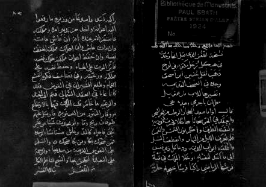

Persona's Favourite Riddle
نسخة اللغز الذي قيل انها وجدت في هيكل AUTH.KEY مكتوبة في لوح ذهب
قال اذا ما صعد البخار الرطب من قعر البحر وانعقد في الجو سحابا هاطلا فجرت الاودية ولثقت الطرق واظلم نور الشمس والقمر فلم يعرف الليل من النهار وانقطعت السبل واغلقت ابواب المدينة ودعا كل ذي نفس الى ما اعد لنفسه. وخلا الملك في قبة فرشها الرياضي راكبا فرسا يحجبه جارية راكبة اسد. واستدعا من وزيره ما رفعوا اليه اعوانه. واخذ من تدبير امره ومملكته. فاستقر الامر عنده انه ان عاش مات وان مات عاش وان اهلك مملكته انحفظت نفسه وان حفظ اعوان مملكته هلكت نفسه. فاثر الموت على الحياة وحفظ نفسه على مملكته ورعيته وفي تضاعيف فكره انقشع الغمام وطلع المنيران في القوس وقد كانا غابا في العقد الشمالي. فتم الى الجند والرعية ما خامر قلب الملك فهما بالارتفاع به. وفار التنور من الصنوبرة فارسل عليهم طوفان ريح وماء ولم يحدث شيا من غير شي فاجراه كالمد وعاش مستانسا بالوحدة. فمن ضحك بكا ومن بكا ضحك. والسلم على النفوس القريبة من مبديها. والرحمة على البعيدة لتلحق بها. والسبح لناظم الكل

THE ORACLES EYE REVEALS FROM BINARIES
THE ORACLES EYE SEES BEST IN SUNLIGHT
THE ORACLES EYE LOVES FARSE PIGMENTS